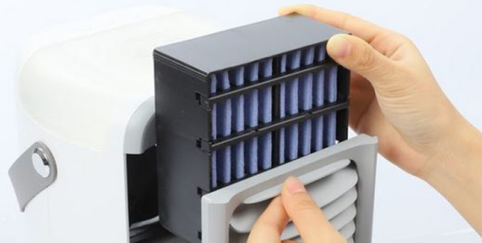
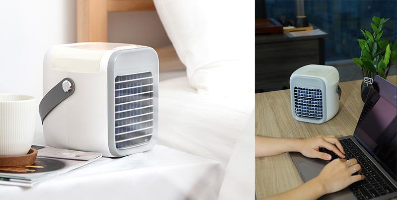

This Incredible New Personal Space Air Cooler Lets You Quickly And Easily Cool Any Space!
3 Days Ago | Leo Silverman

Summary of Article: This incredible new personal space cooler lets you quickly and easily cool any space. The device is light and small so can be carried anywhere: the office, the bedroom, the kitchen, the garage, outdoors, or anywhere else you need it... You can now get your own 40 square meter personal air cooler, 50% Off
Summer can be great, but long hot days in the brutal heat can quickly become intolerable, particularly when you're trying to work, relax, or sleep... No matter what you do, heat can easily find a way to make your living space a dehydrating, sweaty, and uncomfortable nightmare.
Sound Familiar? All of us love the relief of a nice, cool breeze on a hot day outside. We're used to feeling it in cars, shops, and hotels. After suffering in the uncomfortable heat getting some fresh cool air feels amazing.
Why not extend this feeling to your home or workplace?
Traditional AC units are outdated. They are expensive to install and even more costly to run. They look ugly and are difficult and dangerous to clean. You can't even move them around the house with you or take them outside!
Fans can be cheaper, but they only blow around the air - what if the air is too hot already? Its actually making you feel worse when the hot air is moving around your hot room! Plus they are VERY noisy.
Thankfully, there is this amazing new device called Blaux Portable AC! It is an innovative alternative to AC or fan that cools your space. It allows you to keep cool no matter where you are without the need for a plug socket.
Blaux Portable AC is a powerful, lightweight and compact air cooler that you can take anywhere. It cools, moisturises and cleans the warm air from your room to make it a breeze of fresh, cool and clean air!
Introducing Blaux Portable AC:
What Is It Exactly And How Does It Work?
The Blaux Portable AC was designed by two German engineers who were fed up suffering in the hot summers in their winter homes. They found that AC units were super inefficient and expensive to use. The engineers also noticed that none of the traditional AC units were made to travel with.
Blaux Portable AC uses a fan to draw outside air through wet filter pads. This filters the air of impurities and lowers the air temperature due to the evaporation of water within the pads. The cooled air is then distributed directly to your wanted space.
You just need to simply fill up the inbuilt reservoir with 20oz/0.6L of normal tap water, then plug it into a USB port (it's low energy so can even run of a phone or laptop battery!).
From here, you can adjust the temperature to whatever feels most comfortable thanks to its fully adjustable digital thermostat. And not only will the air be cool, it will be fresh and clean as well!
Blaux Portable AC's built-in extremely quiet fan and soothing night light also make it perfect to use throughout the night for a comfortable sleep.
Features:
- Adjustable Blade - The wind outlet blade can be adjusted, moving up and down to control the direction of cooling.
- 3-Speed Fan - The fan has 3 different speeds to fit all needs. Try it sleeping, working, or playing sports!
- Long-Lasting Tank - The water tank lasts up to 8 hours.
- Multi-Color - Offers seven different mood light color options.

And so far, we have not even mentioned that the Blaux Portable AC is also filtering the dust and harmful particles out of your air. Improving your overall health, boosting your immune system and shortening your recovery time from sickness. It is like breathing the cleanest Swiss mountain air!
We all know traditional AC units are full of dust, harmful mould and dangerous bacteria particles inside. You then breathe that toxic mixture in causing you big health problems later on...
With your Blaux Portable AC, you can easily and safely remove and wash the filter. No need to call an expensive AC specialist to do that! (Blaux Portable AC recommends replacing the filters every 6 months. You can order online for only $10.)
Conclusion: Is Blaux Portable AC really worth it?
In short, YES! Such a quality unit for this price makes us definitely say yes! Its portable, powerful, effective and cheap to run. Just think of the amazing sleep and comfort you can get with your Blaux Portable AC!

How to Get a Blaux Portable AC?
Now that you are aware of this amazing new device, and if it's still in stock, here is how to get one:
We recommend ordering an original Blaux Portable AC for cheapest from the supplier's website by clicking here.
It is so Simple!
SPECIAL PROMOTION:: For a Limited Time, Get 50% off and Free Shipping!
* Special Offer Now $89 vs $178.99 - Available Online Only - while supplies last.